The company portal https://j-aautomation.com/j-aautomation/app is LIVE. A link to it never enters a simulation. For practice obtain a separately provisioned training URL, your own account, the permitted fictional project and dates, a visible environment identifier and the trainer’s reset procedure. Without those, use this guide as a read-only demonstration and enter only authorized genuine work.
Original BBS examples include historical live-deployment records. Later training exercises used isolated copies. Each chapter identifies its dataset and checkpoint. Follow the dates and saved states shown for that exercise.
A role, project membership, review permission, supplier authorization and dated crew delegation are separate. Use your own credentials and follow the tasks assigned to your role. Check the selected project and person before recording work.
Verify the result
Confirm your displayed identity, the environment, project number and work dates before saving. For training/reset or lost access contact admin@j-aautomation.com; send the route, role, project/record reference, time and visible error. Keep passwords, activation links, recovery codes and cookies private.
If you get stuck
For an empty project selector, ask the Owner to check account status and assignment/authorization coverage. Do not create a duplicate project or borrow another account.
J&A Automation · BBS role manual · 6 October 2026
Access · activate the invitation and sign in
Go here: Your trusted invitation → Activate your account → Return to sign in → Profile
Do the task
Check the portal address and named account against the invitation provided by the Owner. There is no public sign-up. For an already provisioned account, use the sign-in method supplied to you; do not attempt to activate someone else’s invitation.
For a single-use activation link, open Activate your account. Enter Full name and choose a Password of at least 12 characters, then Activate account. Wait for Account activated. You can sign in now. Do not repeatedly submit while Activating… is displayed.
Choose Return to sign in. Enter your account Email and Password and select Continue to workspace. If you previously enabled MFA, complete Verify your identity with the current Six-digit code and Verify and continue. Use a recovery code only through the offered Use a recovery code control.
Open Profile and verify the own-account name/email/role in Account security. Check the navigation and assigned project. A newly activated account can have zero assignments; activation alone does not grant project access or supplier/chief authority.
Verify the result
The activation success message precedes the separate sign-in. The illustrated new Worker signed in and reached their own Profile; no assignment or financial permission was implied.
If you get stuck
An expired or already used link displays This invitation could not be activated. It may have expired or already been used. If activation already succeeded, return to sign in. Otherwise request a new invitation from the Owner; reloading does not renew the old link.
For offline, temporarily unavailable or rate-limited activation, retain the entered name/password privately, restore connectivity or wait for the displayed retry interval, then retry. An unconfirmed response is not proof of an active account.
For an incorrect password, inactive account or lost access, contact admin@j-aautomation.com from your verified account/contact channel. Supply identity and the visible error; never send the password. This guide does not promise a public password-reset form. The initial Owner is provisioned by the platform operator; an existing Owner provisions the remaining team.
J&A Automation · BBS role manual · 6 October 2026
Access · activate the invitation and sign in
Isolated new recipient: the native activation success message. The password remains masked; this is separate from sign-in.
J&A Automation · BBS role manual · 6 October 2026
Access · activate the invitation and sign in
Reusing the same single-use training invitation shows the genuine recovery message. Return to sign in if already activated; otherwise request a new invitation.
J&A Automation · BBS role manual · 6 October 2026
Trainer setup · prepare a normal cycle before exceptions
Ask the trainer to provide the following checkpoint sheet before reproducing a lesson. Reusing a shared historical BBS period does not reset it. A production URL is never a training switch.
Checkpoint
Required starting condition
Identity and environment
Own correctly provisioned role/profile; isolated URL and visible environment identity.
Project and dates
Exact project number, timezone and unused eligible lesson dates; membership and relevant grants cover both current access and the work date.
Source state
Named source IDs and durations/amounts; ordinary starting drafts/submissions; no unrelated correction already open.
Financial/evidence locks
List issued/closed periods, finalized settlements and signed report versions. Teach ordinary correction on an unlocked scope first.
Expected outcome
Saved state, source count, actual total and appropriate own/customer/internal output. Include the receiving role and result.
Reset
Operator restores the prepared database AND private documents together to the named checkpoint while training is stopped. Trainees do not delete financial history to reset a lesson.
Verify the result
The new normal Worker/Chief lesson uses BBS READINESS · normal work cycle (C-0050-P-2026100601) with initially unfinalized October work. Original BBS locked-period examples are exceptions. External/Supplier/PM October 13–19 and Finance October 26 demonstrations are separately labelled; Accounting can use a separate clean synthetic portfolio.
J&A Automation · BBS role manual · 6 October 2026
Review authority · who receives each source
Review is determined by the actual source, base role and current dated grants. Chief delegation alone grants recording, not approval. A Worker with Can review checked does not become a Project Manager or Finance user. Send a factual correction reason with every return.
Source / recorder
Operational reviewer and prerequisite
Next handoff
Internal own or chief-delegated time
Owner or Finance; assigned PM with current active Can review membership for this project.
Submit the checked work to the authorized reviewer and verify the resulting state.
External/supplier time, including coordinator own time
Authorized Owner. Supplier authorization/recorder provenance keeps these sources outside the ordinary PM time queue.
Verify the resulting review state.
Own/delegated expenses
Owner or Finance; assigned PM with current project review grant. Check factual purchase, payer and evidence.
Verify the expense review state. Direct reimbursement questions to the Owner.
Daily and Technical reports, including supplier profiles
Owner or Finance; assigned PM with current project review grant and permitted project scope.
Owner/Finance prepares the customer period report and version-bound acceptance where required.
PM’s own work
Route it to another authorized reviewer for an independent factual check. Do not infer a universal self-review prohibition solely from a job title.
Use the appropriate personal output and verify the review state.
If you get stuck
If the intended source is absent, check source type, state, dates, assignment/review grant and supplier authorization before searching another queue. A review-enabled Worker Chief variant is not exposed by the current role model; Owner must provision the genuinely permitted reviewer role and grant. Never use a colleague’s credentials to bypass this boundary.
J&A Automation · BBS role manual · 6 October 2026
Start with your account and assigned scope
Browser-verified isolated BBS project C-0050-P-20261005. All ROLE LAB records are synthetic training; they are not real dispatch, customer acceptance, purchase or payment.
Go here: Sign in → Dashboard
The Project Manager coordinates assigned projects and reviews operational facts. Account access, project membership, review permission and crew delegation are separate records. Having the Project Manager role does not automatically assign every project.
This guide uses the same saved BBS project as the Owner and other role guides. The fictional Project Manager account was created through Owner Team, signed in normally, assigned to BBS and granted Can review. The Owner completed the required dated project setup. Those setup actions belong to the Owner; this guide never asks you to create a duplicate BBS project.
Do the task
Use your own invitation or company account. Open the portal sign-in screen, enter the account email and password, and choose Continue to workspace.
Check that the account shown in Profile is yours and the role is Project manager. Never use the Owner or another worker’s credentials to reach a missing control.
Open Dashboard and confirm BBS is in your authorized project scope. Open Projects and identify C-0050-P-20261005 before recording or reviewing anything.
Ask the Owner to verify active account status, dated project membership and Can review before starting this exercise. Assignment coverage must include the work date; current access also depends on the current application date.
Verify the result
Native login succeeded as the fictional Project Manager. Dashboard showed one authorized active project after the Owner completed dated membership.
An assignment starting the following UTC day initially showed no current project. The Owner added genuine coverage for the current day through native controls; no role or session was fabricated.
If you get stuck
If BBS is missing, stop recording and give the Owner the project reference, your account and intended work dates. Do not create a replacement project.
J&A Automation · BBS role manual · 6 October 2026
Start with your account and assigned scope · continued
If a review control is missing, check membership dates and Can review separately from the role label.
J&A Automation · BBS role manual · 6 October 2026
Start with your account and assigned scope
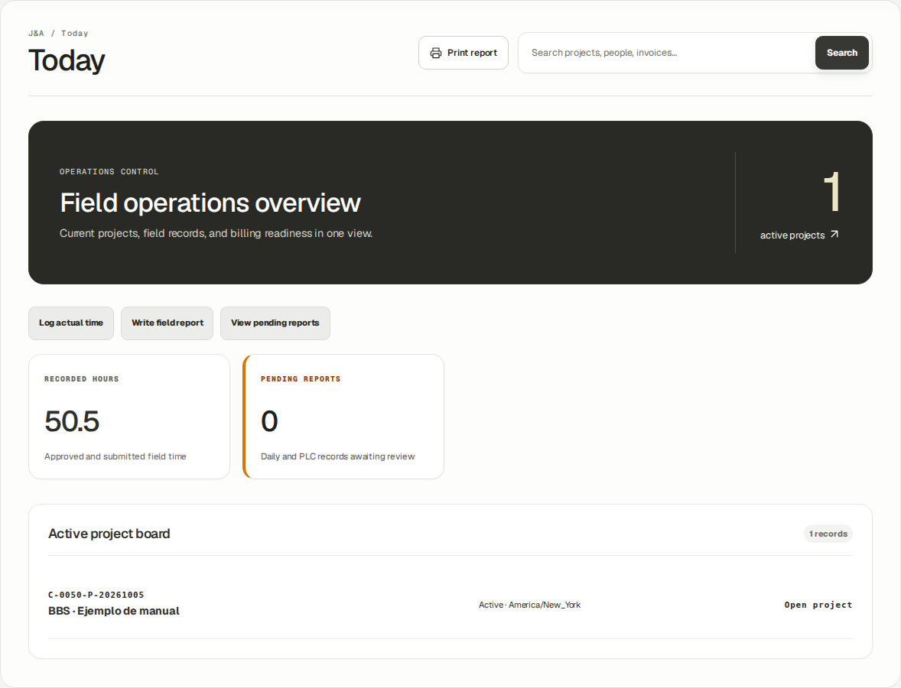
Actual Project Manager session: one authorized BBS project after native Owner onboarding.
J&A Automation · BBS role manual · 6 October 2026
Find the right workspace on desktop and phone
Browser-verified isolated BBS project C-0050-P-20261005. All ROLE LAB records are synthetic training; they are not real dispatch, customer acceptance, purchase or payment.
Go here: Dashboard → primary navigation / More
Dashboard highlights operational activity. Projects holds project identity and scope; Approvals is the actionable review queue; Reports holds Daily, Technical / PLC and customer-follow-up views.
Time and Expenses are source registers. My Pay always concerns your own compensation. Team here is the operational directory and assignments, not Owner account administration. Planning publishes future assignments. Documents holds private project files; Profile holds expertise, availability and your security settings. Notifications and Help are separate destinations.
Do the task
On desktop select the named workspace in the sidebar. Keep the BBS project filter when changing registers.
On a phone use Dashboard, Projects, Approvals and Reports in the bottom navigation. Open More for the secondary workspaces.
Use the workspace filters rather than assuming every total concerns your own work. Time can show people across authorized projects; My Pay remains personal.
Use horizontal scrolling where the screen says Scroll horizontally to review all columns. Open a record to see its full facts before taking action.
Verify the result
Actual PM navigation and Approvals were opened at 1440 desktop and 390 phone widths; the More drawer was captured.
Planning was opened at 768 tablet width. These checks verify navigation and visible controls, not every device or browser.
If you get stuck
If a drawer covers your content, close it or select a destination. Recheck the project and dates after navigation.
Access restricted means the role cannot use that destination; return through Open my workspace and ask the Owner about the business handoff.
J&A Automation · BBS role manual · 6 October 2026
Find the right workspace on desktop and phone
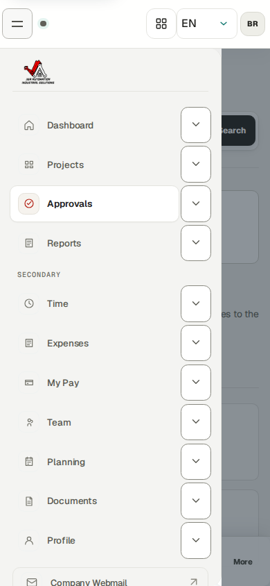
Actual PM phone session: More exposes secondary workspaces.
J&A Automation · BBS role manual · 6 October 2026
Find the right workspace on desktop and phone
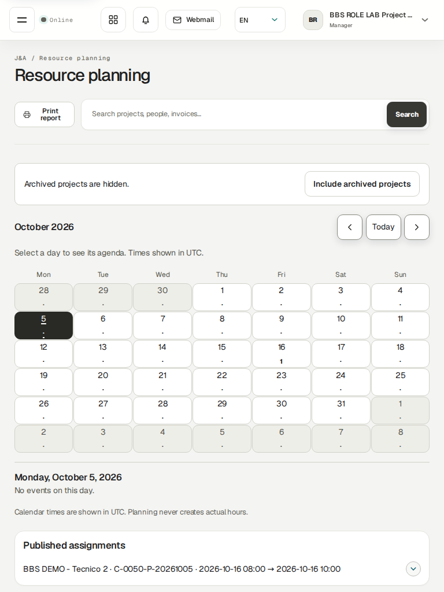
Actual PM tablet session: BBS planning calendar.
J&A Automation · BBS role manual · 6 October 2026
Use Dashboard to decide where to act
Browser-verified isolated BBS project C-0050-P-20261005. All ROLE LAB records are synthetic training; they are not real dispatch, customer acceptance, purchase or payment.
Go here: Dashboard → authorized project
Dashboard provides operational oversight. Recorded hours and activity counts describe the displayed operational scope. Open the underlying register to inspect its dates and state.
Do the task
Open Dashboard and identify the BBS project card and visible operational totals.
Choose the project or workspace behind an attention item. In Approvals use the BBS project and the work-date range to isolate the pending source.
Inspect the record and its history before deciding whether the facts are complete. Review daily work, expenses and reports in their own queues.
Verify the result
The fictional PM dashboard displayed only authorized BBS project oversight.
A cleared queue is a completion check; it does not replace inspecting an actionable record first.
If you get stuck
If the number differs from a register, compare date range, workers, state filters and whether the dashboard figure means recorded or reviewed activity.
Escalate questions outside the displayed operational scope to the Owner with the relevant project and source IDs.
J&A Automation · BBS role manual · 6 October 2026
Use Dashboard to decide where to act
Actual PM Dashboard: operational oversight of the BBS training project.
J&A Automation · BBS role manual · 6 October 2026
Inspect the project before changing its team
Browser-verified isolated BBS project C-0050-P-20261005. All ROLE LAB records are synthetic training; they are not real dispatch, customer acceptance, purchase or payment.
Go here: Projects → BBS → Overview
Project identity includes reference, client, status, schedule and timezone. BBS uses America/New_York for source work context, while Planning explicitly uses UTC. Your project Overview, Team and Reports / files views expose operational information.
Do the task
Open Projects. Use Search projects or Status, then Apply filters to find C-0050-P-20261005.
Open BBS and confirm the client, active status, planned start and timezone in Overview.
Open Team to inspect who is assigned and use Reports / files to reach project outputs and evidence.
Before making an assignment change, compare the intended work dates with existing coverage and the worker’s availability.
Verify the result
Native PM project detail and Team were opened. The project was scoped to BBS.
Existing BBS records were preserved; this PM packet created no duplicate project.
If you get stuck
Include archived projects only when looking for historical work. Do not reopen or duplicate archived work to circumvent a blocked source.
Seek the Owner’s handoff for project closing or other actions unavailable in your authorized workspace.
J&A Automation · BBS role manual · 6 October 2026
Inspect the project before changing its team
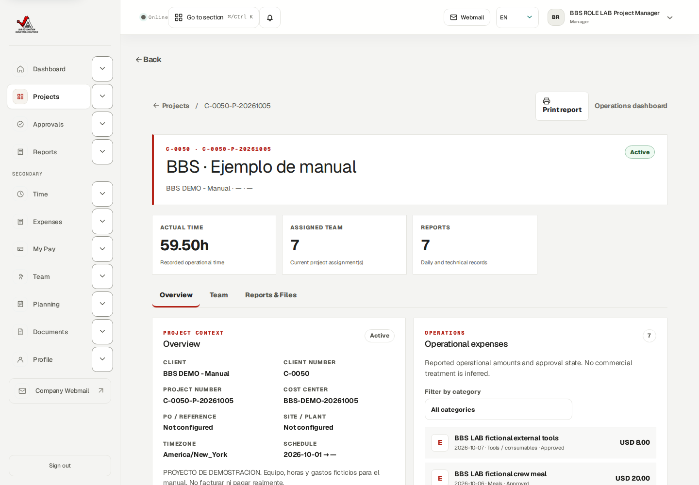
Actual PM project Overview: authorized BBS operational scope.
J&A Automation · BBS role manual · 6 October 2026
Assign workers and verify saved membership dates
Native isolated BBS role exercise · C-0050-P-20261005 · synthetic October 2026 work only
Go here: Team / Projects → assignments
Project membership and Can review are separate permissions. Assign only people whose work and dated coverage are authorized; the Owner completes the required project setup.
Do the task
Inspect the project and current membership dates. To add membership, open Assign worker and use Project, Expertise filter, Search workers, Worker, Starts on and optional Ends on, then Assign.
For an existing membership, open Update assignment, inspect Starts on and Ends on, choose Update and reload the membership to verify persistence.
The native exercise updated Worker 2’s BBS membership from October 1/open-ended to October 1–31, verified the saved dates, then restored the open end through Update and verified it again.
Verify the result
Update assignment was executed successfully and restored. Assign worker fields were inspected; a new assignment was not executed because available people already had overlapping membership.
Native supplier membership date changes were rejected by the dated coverage guard. The attempted changes did not save. Ask the Owner to resolve coverage.
If you get stuck
If a date change is blocked, read the validation and check saved membership before retrying. Do not bypass the guard or assume a directory record is membership.
J&A Automation · BBS role manual · 6 October 2026
Assign workers and verify saved membership dates
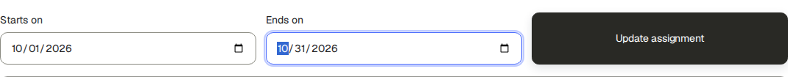
Actual existing-worker Update assignment form before saving the test end date.
J&A Automation · BBS role manual · 6 October 2026
Assign workers and verify saved membership dates
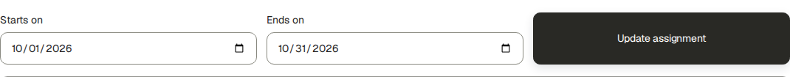
Reloaded membership with the saved October 31 end date.
J&A Automation · BBS role manual · 6 October 2026
Assign workers and verify saved membership dates
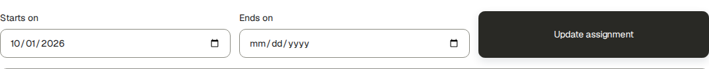
Final verified restoration of the original open-ended membership.
J&A Automation · BBS role manual · 6 October 2026
Review a submitted source using the correct decision
Native isolated BBS role exercise · C-0050-P-20261005 · synthetic October 2026 work only
Go here: Approvals → submitted source
Open the source and inspect author, project/date, duration or receipt, work facts and existing history. Review authority is source-specific. Supplier technician time is Owner-only; authorized PM operational report review is separate. See Review authority · who receives each source (review-authority) and Recovery · sources, obligations and immutable history (recovery-matrix).
Approve accepts the submitted operational facts. Needs changes requests a linked corrected draft while preserving the source. Reject records that the source is rejected; it is not the normal correction route.
Do the task
Choose Needs changes when the activity occurred but facts need correction. Enter a clear actionable reason, then verify Needs changes on the source.
Choose Reject for a source that should not count as submitted work, and record the reason. Reopen it to verify Rejected.
In the October 17 exercise PM rejected the fictional duplicate 15-minute source 01a11182-241b-74a7-8ad1-fc97a79e39ee. PM returned the separate 30-minute source 01a11182-2cc0-7526-9344-32c28151b219 because actual duration was 15 minutes.
Verify the result
Both native decisions persisted on their exact sources. Needs changes permitted author correction; Rejected did not expose Create corrected draft.
If you get stuck
A worker should read a rejection reason and avoid re-entering the rejected duplicate. If rejection was mistaken, escalate to the reviewer/Owner; do not promise a correction action absent from the source.
J&A Automation · BBS role manual · 6 October 2026
Review a submitted source using the correct decision
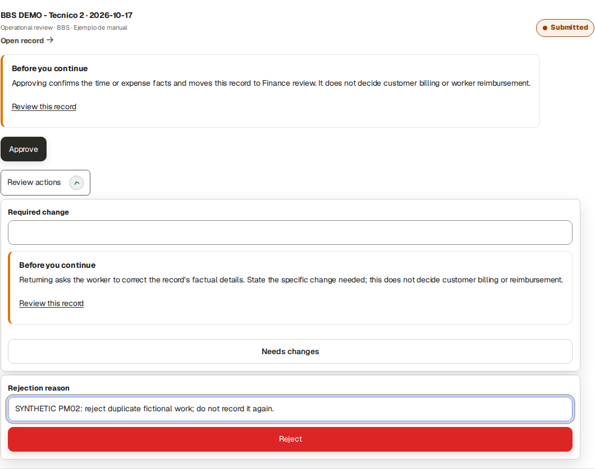
Native Reject decision with a specific duplicate-activity reason.
J&A Automation · BBS role manual · 6 October 2026
Review a submitted source using the correct decision
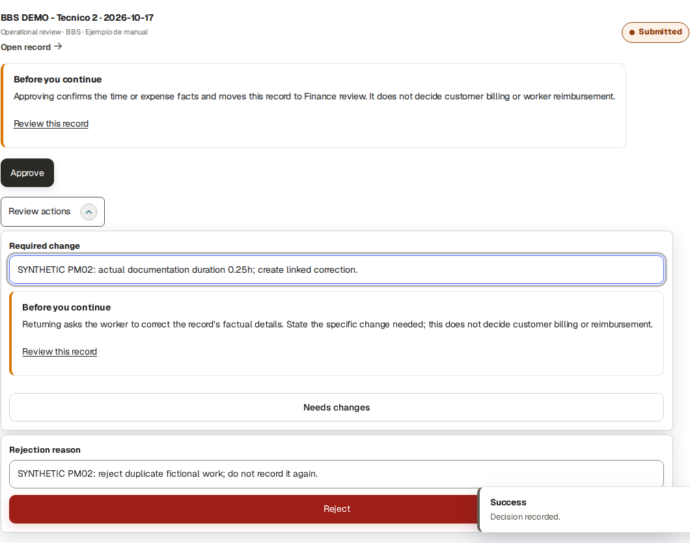
Native Needs changes decision requests correction of actual duration.
J&A Automation · BBS role manual · 6 October 2026
Verify author recovery and approve the linked replacement
Native isolated BBS role exercise · C-0050-P-20261005 · synthetic October 2026 work only
Go here: Returned source → linked correction → review
Needs changes is an author-recovery workflow. The recorded worker creates the linked corrected draft and submits it; PM verifies the replacement against the reviewer reason.
Rejected history is preserved separately and does not offer the same author correction action. See Review authority · who receives each source (review-authority) and Recovery · sources, obligations and immutable history (recovery-matrix).
Do the task
Open the returned October 17 Worker 2 source and verify the reason requests 15 actual minutes.
The worker opens Create corrected draft, enters the corrected duration/activity/reason, saves and submits the linked replacement.
PM opens replacement 01a11183-46a0-743e-92fc-e0760db21f77, compares the original link and reason, then Approves and reopens the saved source.
Verify the result
The native author recovery and PM review were completed. Replacement is Approved at 15 minutes; original remains Needs changes. No duplicate rejected activity was recreated.
If you get stuck
When a replacement does not address the reason, return it with specific remaining facts. Preserve all original/replacement links.
J&A Automation · BBS role manual · 6 October 2026
Verify author recovery and approve the linked replacement
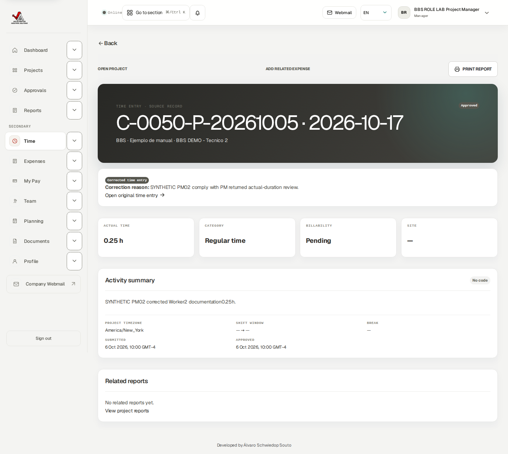
Actual Approved linked replacement, 15 minutes, with original source preserved.
J&A Automation · BBS role manual · 6 October 2026
Review authored Daily and Technical facts with attribution
Native isolated BBS role exercise · C-0050-P-20261005 · synthetic October 2026 work only
Go here: Reports → source record
Daily and Technical reviews accept operational narratives. They do not approve supplier time, authorize customer acceptance or certify a clean attachment scan.
Work performed by, Report created by and Reviewed by identify distinct responsibilities. Verify the actual attribution after review.
Do the task
Open the submitted report and inspect project/date, narrative, evidence metadata and source version.
For Technical / PLC inspect context, diagnosis/change, validation result, production impact, risks and rollback. Read the saved native preview.
Use Approve or Needs changes with a reason as appropriate. Reopen the source and inspect Approved, reviewer, author and version.
Verify the result
Native coordinator Technical source 01a1117d-a645-738f-adae-f60c4e5a3f4a reached Approved v3. Work performed by and Report created by show the coordinator; Reviewed by shows the PM. The October 13 coordinator Daily was also approved.
If you get stuck
Check a private attachment’s exact Storage and Scan status; Saved/Not scanned is not proof of clean scanning.
J&A Automation · BBS role manual · 6 October 2026
Review authored Daily and Technical facts with attribution
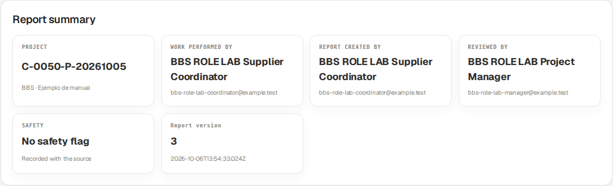
Actual Approved Technical attribution: coordinator author and PM reviewer.
J&A Automation · BBS role manual · 6 October 2026
Review the ready customer version and acceptance queue
Native isolated BBS role exercise · C-0050-P-20261005 · synthetic October 2026 work only
Go here: Reports → customer period report → Customer follow-up
Approved time and reports are period inputs. Finance or Owner refreshes period reports and creates the customer artifact. PM then reads the exact customer version permitted by project scope.
The October 13–19 customer snapshot is v2 with content hash 85ba28d58be5c1f0c582266794df84fc491344508b23c63a33659b0ce98d6042. It contains the approved period inputs present at generation, including the coordinator Daily and 3.75 internal time hours displayed as 3.8 h. Later records do not silently rewrite this snapshot.
Do the task
After Finance prepares the period, open the Ready customer report PDF and inspect period, project, source identity, version and activity content.
For report 01a11179-da79-7298-baa2-074d02192e78 PM used the native Approve customer report action bound to that exact v2/hash.
Open the customer follow-up/acceptance queue for BBS, From October 13 to To October 19. Verify the row is Ready for signature and open the exact current report.
Hand the version to the authorized customer process. Record actual acceptance only when it occurs; a Ready for signature row is not a signed copy.
Verify the result
Native Finance generation, PM exact-version approval and the Ready acceptance queue were verified. No customer signature, acceptance event or payment was invented. PM saw the approved operational hours and activity.
If you get stuck
If later source corrections affect the period, ask Finance/Owner to create and review the new current version before requesting acceptance.
J&A Automation · BBS role manual · 6 October 2026
Review the ready customer version and acceptance queue
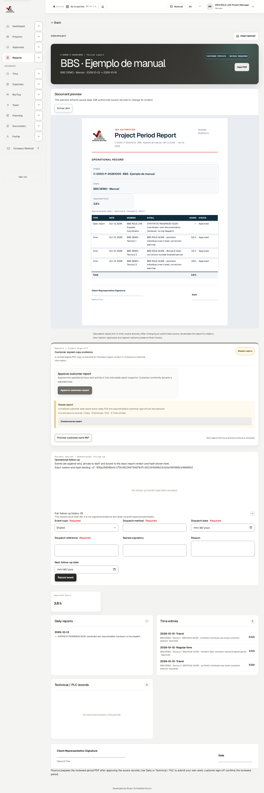
Customer-safe operational snapshot prepared by Finance for PM review.
J&A Automation · BBS role manual · 6 October 2026
Review the ready customer version and acceptance queue
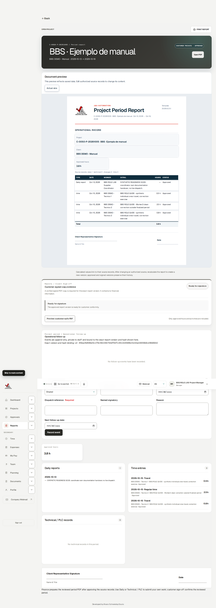
PM-approved exact customer report version, now Ready for signature.
J&A Automation · BBS role manual · 6 October 2026
Review the ready customer version and acceptance queue
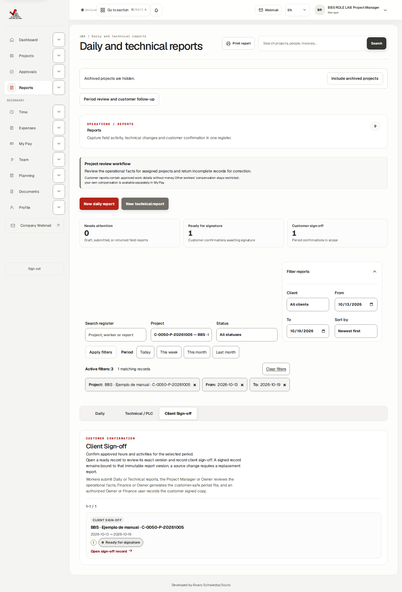
Actual October 13–19 acceptance queue; ready is distinct from signed.
J&A Automation · BBS role manual · 6 October 2026
Publish a future plan without creating actual time
Browser-verified isolated BBS project C-0050-P-20261005. All ROLE LAB records are synthetic training; they are not real dispatch, customer acceptance, purchase or payment.
Go here: Planning → Publish field assignment
Planning is an expectation and coordination tool. It does not create recorded work or approvals. Planning and worker agendas explicitly display UTC.
The positive BBS exercise published a future October 16 08:00–10:00 UTC assignment for Worker 2, planned 2 hours, fictional bench site and required expertise.
Do the task
Open Planning and select BBS in Publish field assignment.
Select the existing assigned worker(s). Verify availability and assignment coverage for the intended date.
Enter Start (UTC), optional End (UTC), optional Planned hours, Site and Required expertise. Use the actual agreed schedule; do not convert site-local time silently.
Choose Publish assignment. Open the October 16 day and the Published schedule record.
Confirm the selected worker, UTC start/end and 120 planned minutes. Ask the worker to verify their agenda; they still record actual work independently afterward.
Verify the result
Native PM Publish assignment succeeded. Worker 2’s separate role session saw the published plan.
A read-only database check found zero BBS actual time entries on October 16 after publication and update.
If you get stuck
If the worker is absent, verify dated project assignment and availability with Owner/Team. Publishing is not a substitute for project membership.
If dates are wrong, use the published record’s update workflow rather than creating an overlapping duplicate plan.
J&A Automation · BBS role manual · 6 October 2026
Publish a future plan without creating actual time
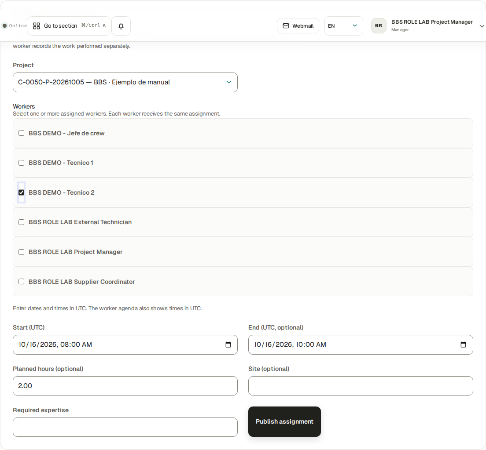
Actual PM publish form before saving the synthetic future assignment.
J&A Automation · BBS role manual · 6 October 2026
Publish a future plan without creating actual time
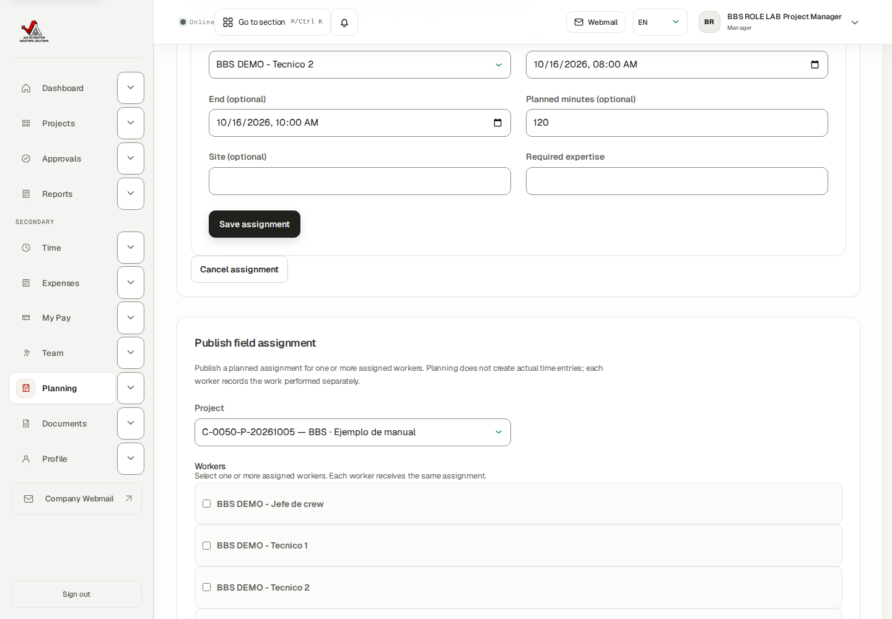
Actual PM published plan:120 minutes in UTC, independent of actual work.
J&A Automation · BBS role manual · 6 October 2026
Change a published assignment and verify persistence
Browser-verified isolated BBS project C-0050-P-20261005. All ROLE LAB records are synthetic training; they are not real dispatch, customer acceptance, purchase or payment.
Go here: Planning → Published schedule → Open record
A published assignment can be edited through its own record. Updating the plan does not correct an actual source that a worker has already submitted.
Do the task
Open Published schedule and choose Open record for the correct BBS worker/date.
Inspect Worker, Start, End, Planned minutes, Site and Required expertise.
Change the intended planning value and choose Save assignment. Reopen the same record to verify the new value.
If the assignment should be canceled, use Cancel assignment on that record, then verify its state and tell the affected worker. The separate October 22 cancellation was executed in the historical planning checkpoint; the original positive assignment example remains separate.
Verify the result
PM changed only the fictional bench site note and Save assignment succeeded; the original worker, date and 2-hour plan remained.
No October 16 actual time source was created by either publish or update.
If you get stuck
Check that you opened a planning record, not a time-entry source. Actual submitted work requires the reviewed correction path.
Coordinate a genuine cancellation with the worker; do not assume a changed plan deletes recorded history.
J&A Automation · BBS role manual · 6 October 2026
Change a published assignment and verify persistence
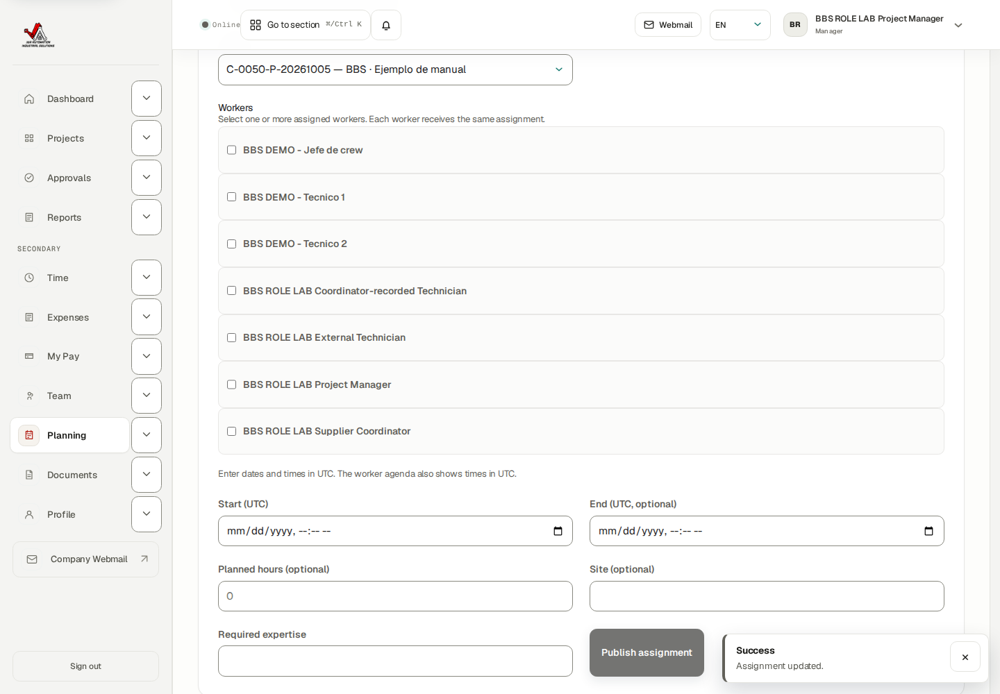
Actual PM Save assignment result after changing the fictional site note.
J&A Automation · BBS role manual · 6 October 2026
Follow a shared plan through crew work and review
Isolated BBS planning and crew lab · October 20–25, 2026. Browser-verified synthetic operational records; no real dispatch, payment or customer acceptance. Earlier examples retain their original date scope.
Go here: Planning → October 20; Worker / Chief: Today; Approvals
The Owner published one common October 20 08:00–16:00 UTC plan to the Chief and two existing technicians. This created three planning records, one per person. Their separate Worker-role agendas each showed an eight-hour BBS plan. Project membership and dated chief delegation remained separate prerequisites.
Actual work differed: Technician 1 personally recorded six hours; the Chief recorded seven hours for Technician 2 through the delegated Crew workspace; the Chief personally recorded eight hours. Each source was submitted individually and reviewed by a separate Project Manager account.
Do the task
Open Planning, choose October 20 and inspect the three BBS agenda records. Confirm project, worker, UTC interval and 480 planned minutes for each.
Ask each worker to check Today → Upcoming assignments using their own account. They do not accept or complete the plan with a task button; they record and report actual work separately.
For delegated crew entry, have the Chief check project, date and managed worker before saving individual actual hours. Avoid duplicating a crew-entered source through a worker’s own time form.
Open Approvals for BBS and October 20. Review the submitted 6 / 7 / 8 hours and operational notes. Choose the supported Approve control for each truthful source.
Ask the workers to reopen Time → Week of 2026-10-19. Technician 1 shows Actual 6.00h, Expected 8.00h, Difference −2.00h and Needs note; Technician 2 shows 7.00h / 8.00h / −1.00h and Needs note; Chief shows 8.00h / 8.00h / 0.00h and Approved.
Verify the result
Native multi-worker publication created no actual time. Later separately authored sources persisted Approved with 360 / 420 / 480 minutes and the correct creator identities.
Needs note is a weekly comparison indicator for approved time differing from its expectation. The underlying source remains Approved. Explain the work difference in operational notes/reports; never force actual hours to match a target.
J&A Automation · BBS role manual · 6 October 2026
Follow a shared plan through crew work and review · continued
If you get stuck
A chief’s ability to record crew time does not automatically grant review authority. Ask the Owner to verify the separate review permission.
If a worker reports a missing plan, compare today in UTC, project membership and the published plan date. If the actual source is wrong, use the correction chapter rather than editing planning.
J&A Automation · BBS role manual · 6 October 2026
Follow a shared plan through crew work and review
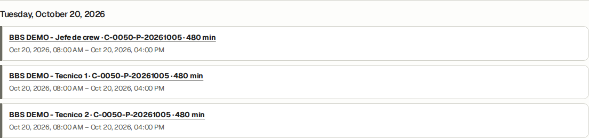
Owner-created shared BBS plan visible in the authorized planning agenda: one record per person, each 480 planned minutes.
J&A Automation · BBS role manual · 6 October 2026
Follow a shared plan through crew work and review
Separate Worker 1 view after PM review: six actual hours versus an eight-hour expectation.
J&A Automation · BBS role manual · 6 October 2026
Follow a shared plan through crew work and review
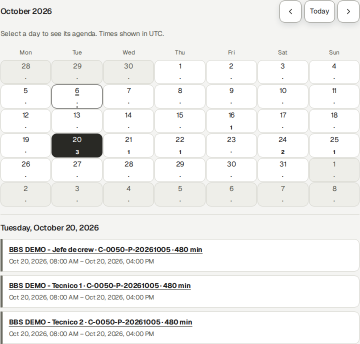
Actual Project Manager calendar at 768-pixel tablet width, with the three October 20 planning records.
J&A Automation · BBS role manual · 6 October 2026
Follow a shared plan through crew work and review
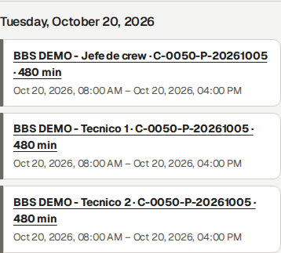
Actual Project Manager selected-day agenda at 390-pixel phone width. The three worker records display their UTC intervals and planned quantities.
J&A Automation · BBS role manual · 6 October 2026
Distinguish planned hours, expected hours and work goals
Isolated BBS planning and crew lab · October 20–25, 2026. Browser-verified synthetic operational records; no real dispatch, payment or customer acceptance. Earlier examples retain their original date scope.
Go here: Planning; Worker: Today and Time; Owner: Projects → Expected Working Schedule
The Owner configures Expected Working Schedule through Projects → More actions. It has an effective date, IANA timezone and a minutes value for each weekday. The BBS lab’s October 19 schedule is 480 minutes Monday–Friday and zero on weekends. This reference is separate from published planning and never creates actual work.
The October 21 practice plan was edited to three hours, 09:00–12:00 UTC. Worker 1 sees Planned: 3 h, while the Wednesday timesheet still expects 8.00h and records 0.00h until actual work is entered. Creation displays Planned hours; the edit form displays Planned minutes, so three hours is 180 minutes.
Planning and worker agendas display UTC. On October 20, 08:00–16:00 UTC means 10:00–18:00 Europe/Madrid or 04:00–12:00 America/New_York. Convert for the actual date, because daylight-saving changes can alter the offset.
There is no generic worker-goal Accept / Reject / Mark completed workflow. Use assignments for coordination, expected hours for comparison and Daily / Technical reports for actual progress and blockers. Project milestones are separate project checkpoints; ask the Owner to establish any required milestone configuration.
After the earlier planning tables, the Owner added an explicitly synthetic October 23-only membership for Technician 1 in the existing fictional onboarding project. The later Worker weekly table shows Friday Expected and Difference as — because two own projects cover that day. Earlier screenshots still correctly show Friday eight hours and weekly forty before that extra assignment. No actual work was entered in the second project.
The earlier cancellation screenshots are a historical checkpoint, not the final published-plan count. After later synthetic schedules, the final isolated BBS planning summary contains nine Published assignments and one Cancelled assignment. Cancellation removes that assignment from current published coverage while retaining its history; it creates no actual time.
Do the task
Open an existing Published assignments record, edit the interval, Planned minutes and optional site, and choose Save assignment. Reopen it to verify persistence and ask the worker to reload Today.
J&A Automation · BBS role manual · 6 October 2026
Distinguish planned hours, expected hours and work goals · continued
To cancel a plan, identify the correct project, person and dates and choose Cancel assignment. Check the calendar and the worker’s upcoming agenda. Cancellation does not erase or correct an actual-time source.
If Today has no plan but lists Your assigned projects, check whether the plan is future or has not been published. Membership alone does not publish a shift.
If the worker is unavailable in the publish form, ask the Owner to check active account status and project-assignment coverage for the selected interval. Supplier personnel with coverage ending October 31 are not eligible on November 1.
If Expected is —, ask the Owner to check membership and effective schedule dates. Zero is a valid target; — means unknown. Worker 1’s September 28–30 precede their October 1 membership and therefore show unknown expectations.
If multiple projects cover the day, do not add their targets together yourself. The application leaves the expectation unknown where it lacks a single effective project/schedule. Resolve the planning allocation with the Owner; the later October 23 one-day second-assignment checkpoint demonstrates the unknown target.
Verify the result
Native PM edit saved 180 minutes, updated UTC dates and site; the Worker agenda reflected those values after reload. The weekly expected eight hours did not change.
A separate October 22 Worker 2 plan was cancelled natively and disappeared from the Worker agenda. Its retained record has cancelled status and no actual-time source was generated.
The later separate Worker session showed October 23 Actual 0.00h / Expected — / Difference — while the main October 20 six actual and eight expected hours stayed unchanged. Counting a future own membership for ambiguity did not expose that project in the current selector or add actual records.
If you get stuck
The External Technician profile has restricted Time / Expenses / Reports access and currently no internal Today agenda or Planning calendar, even when the Owner publishes a plan. Confirm its schedule through the authorized operational handoff.
Use screenshots and hours comparisons to explain operational issues within your authorized project. Send questions outside that scope to the Owner.
After a publish-field validation message, correct the highlighted field and recheck the retained person, UTC interval, planned quantity, Site and Required expertise before retrying.
J&A Automation · BBS role manual · 6 October 2026
Distinguish planned hours, expected hours and work goals
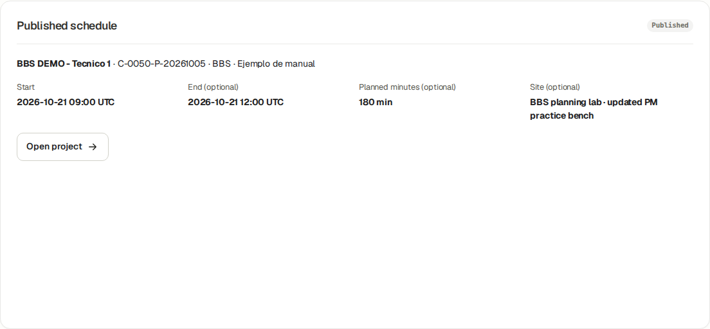
PM published record reopened after editing: October 21 09:00–12:00 UTC, 180 planned minutes and the saved fictional site.
J&A Automation · BBS role manual · 6 October 2026
Distinguish planned hours, expected hours and work goals
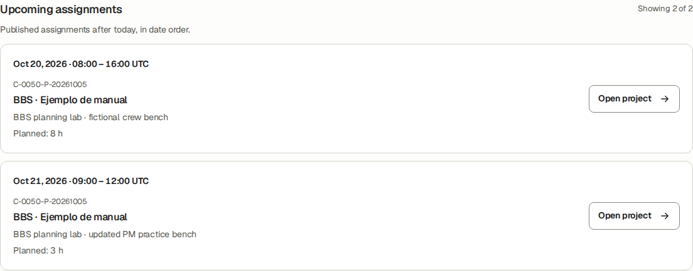
Separate Worker 1 agenda after the edit: the published three-hour practice plan appears alongside the eight-hour crew plan.
J&A Automation · BBS role manual · 6 October 2026
Distinguish planned hours, expected hours and work goals
Separate Worker 1 weekly table: planned three hours does not replace the independently configured eight-hour Wednesday expectation. This is the earlier checkpoint, before the additional October 23 one-day membership; its Friday eight-hour expectation and weekly forty-hour target remain correct for that saved stage.
J&A Automation · BBS role manual · 6 October 2026
Distinguish planned hours, expected hours and work goals
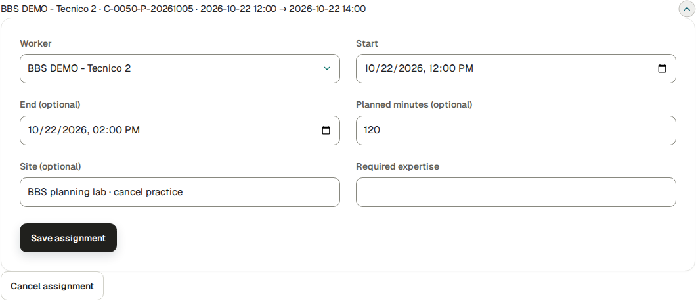
Actual PM Cancel assignment control for the separate October 22 Worker 2 practice plan. Verify the worker and interval before cancelling.
J&A Automation · BBS role manual · 6 October 2026
Distinguish planned hours, expected hours and work goals
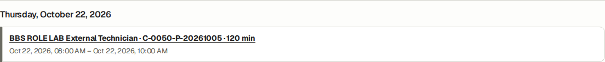
October 22 agenda after cancellation: the Worker 2 practice plan has disappeared; the separate external-technician two-hour plan remains.
J&A Automation · BBS role manual · 6 October 2026
Distinguish planned hours, expected hours and work goals
Separate Worker 1 historical week: dashes before the October 1 assignment demonstrate an unknown expected target, rather than a zero-hour schedule.
J&A Automation · BBS role manual · 6 October 2026
Distinguish planned hours, expected hours and work goals
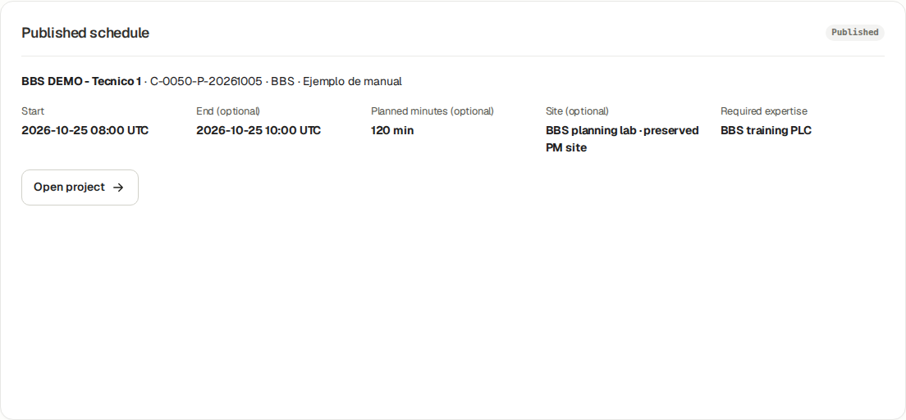
Additional PM October 25 practice publication reopened after correcting an invalid interval: saved UTC 08:00–10:00, 120 planned minutes, fictional Site and Required expertise. No actual work was generated.
J&A Automation · BBS role manual · 6 October 2026
Distinguish planned hours, expected hours and work goals
Later isolated checkpoint, after an additional one-day project membership on October 23: Friday Actual is zero and Expected / Difference are unknown (—). October 20 remains six actual versus eight expected hours. Earlier weekly tables precede this added membership and correctly show Friday eight expected hours.
J&A Automation · BBS role manual · 6 October 2026
Distinguish planned hours, expected hours and work goals
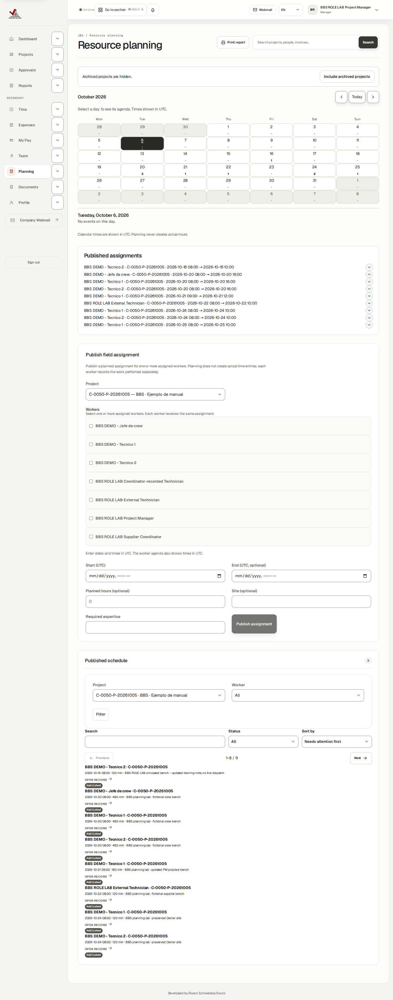
Final planning summary after later synthetic schedules: nine Published and one Cancelled; earlier cancellation figures remain historical checkpoints.
J&A Automation · BBS role manual · 6 October 2026
Maintain expertise and availability in the correct scope
Browser-verified isolated BBS project C-0050-P-20261005. All ROLE LAB records are synthetic training; they are not real dispatch, customer acceptance, purchase or payment.
Go here: Profile → Expertise and availability
Profile lets the PM inspect authorized workforce expertise and availability. Availability windows and Planning use UTC. Account security below the workforce profile concerns your own signed-in account.
The positive exercise saved only the fictional PM’s own available October 16 08:00–10:00 UTC window. No other person’s real availability was changed.
Do the task
Open Profile. Use Inspect worker and View worker profile to confirm whose workforce information is displayed.
Choose Add availability. Enter Starts and Ends in UTC, select Available/appropriate status, add the operational note, and choose Save availability.
Reopen Profile and inspect the availability window table and calendar day. Check person, dates, times and status.
For expertise, use Add expertise, select the appropriate existing skill and proficiency, save, and recheck the table. Skill editing was inspected, not executed in this packet.
Verify the result
Native PM availability Save succeeded and the reopened table showed the exact fictional October 16 window.
The separate planning record remained Worker 2’s future assignment; availability alone did not publish a plan or create hours.
If you get stuck
Before changing a workforce record verify the selected person; changing Inspect worker does not switch your authenticated account.
If the required expertise is absent, ask the Owner to maintain the expertise catalog. Avoid using an unrelated skill as a placeholder.
J&A Automation · BBS role manual · 6 October 2026
Maintain expertise and availability in the correct scope
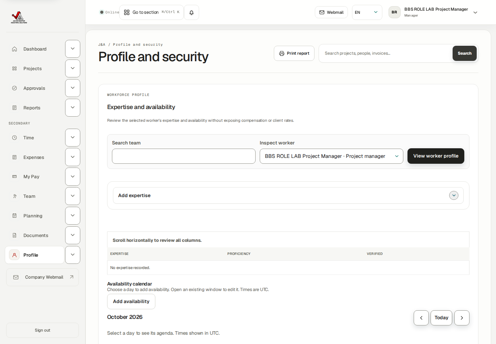
Actual PM Profile: saved fictional availability window and own account security.
J&A Automation · BBS role manual · 6 October 2026
Record your own operational time and hand it off
Browser-verified isolated BBS project C-0050-P-20261005. All ROLE LAB records are synthetic training; they are not real dispatch, customer acceptance, purchase or payment.
Go here: Time → Log time → Save draft → Submit
The PM can record personal operational work separately from reviewing crew facts. The Time register can include authorized people; your source must name the intended worker. My Pay remains personal.
The positive exercise saved 0.50 actual hour on October 8 for the fictional PM’s documentation work, then submitted it. It remains pending another authorized reviewer; this packet did not self-approve it.
Do the task
Open Time, filter BBS and the intended dates, then choose Log time.
Select Assigned project BBS, enter the actual Date, Operational category, Actual hours and Activity summary. Add start/end times only if known.
Choose Save draft. Open the saved source and verify the person, date, duration and summary.
Choose Submit for the reviewed draft. Confirm Submitted and give its source to another authorized reviewer.
For weekly entry, inspect every draft included before Submit all week drafts. Copy previous week layout copies layout; it is not a statement that the work happened. Weekly copy/bulk submission were inspected, not executed in this PM packet.
Verify the result
The PM source was genuinely saved and Submitted with 30 minutes.
The source was not approved. Personal My Pay showed a pending estimate rather than proof of payment.
If you get stuck
Correct an ordinary draft before submission. Once submitted, follow a returned linked correction and explicit resubmission.
If a guard blocks a correction, hand off to Finance/Owner with the exact error and source ID.
J&A Automation · BBS role manual · 6 October 2026
Record your own operational time and hand it off
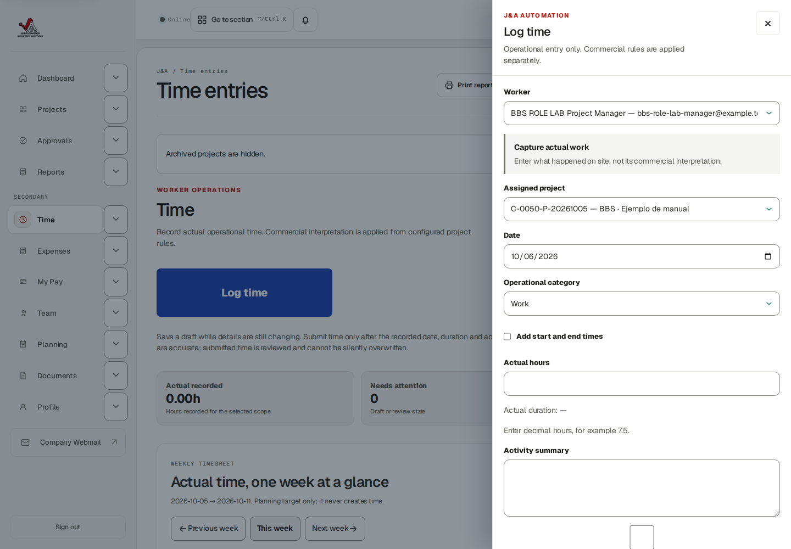
Actual PM Log time form for personal operational work.
J&A Automation · BBS role manual · 6 October 2026
Record your own operational time and hand it off
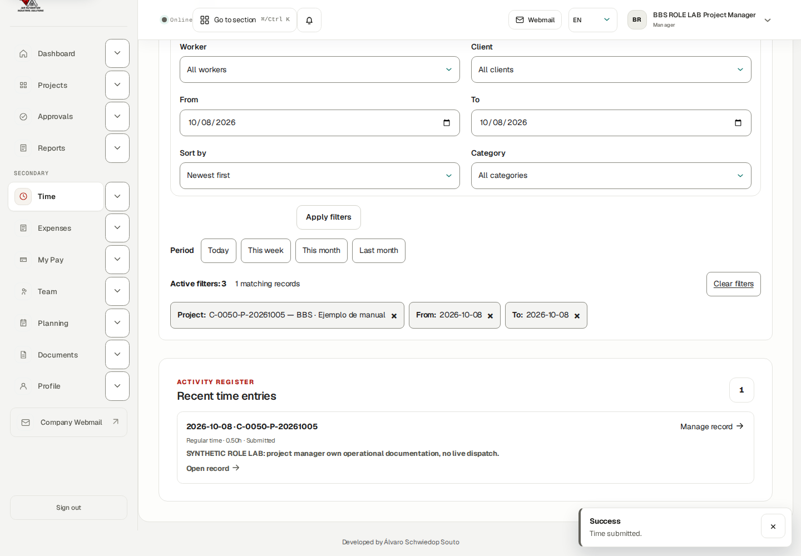
Actual PM saved-and-submitted half-hour training source.
J&A Automation · BBS role manual · 6 October 2026
Inspect receipts and distinguish operational review from repayment
Browser-verified isolated BBS project C-0050-P-20261005. All ROLE LAB records are synthetic training; they are not real dispatch, customer acceptance, purchase or payment.
Go here: Expenses → Record expense / Approvals Expenses
Expenses records receipt evidence and operational facts: project, date, category, vendor, currency, amount and who paid. Record the actual purchase facts; reimbursement is a later separate step. The PM operationally approved existing synthetic receipts; PM own expense creation was not executed here.
Do the task
Open Expenses and filter BBS, date range, worker, category, currency or Receipt evidence as needed.
Open the receipt/source and check the event, amount, currency, payer and any linked logged hours. Required receipt missing needs supporting evidence before submission or review.
For your own permitted new expense choose Record expense, enter the factual fields and attach the receipt, then Save draft and inspect it before Submit. This is an inspected reference path in the PM packet.
For another submitted expense, go to Approvals → Expenses and Approve correct operational facts or return a specific Required change.
Send Finance the approved source for the later reimbursement review and payment process.
Verify the result
PM operational approvals succeeded for the fictional USD 12 worker supply receipt, USD 20 allocated shared meal and USD 8 external expense.
No reimbursement date, payee or actual payment was recorded by the PM packet.
If you get stuck
Never change currency merely to make an amount resemble another view. Check receipt evidence and the actual original spending currency.
An Approved receipt is not proof of reimbursement; the authorized Finance process and the worker’s own payment status provide that check.
J&A Automation · BBS role manual · 6 October 2026
Inspect receipts and distinguish operational review from repayment
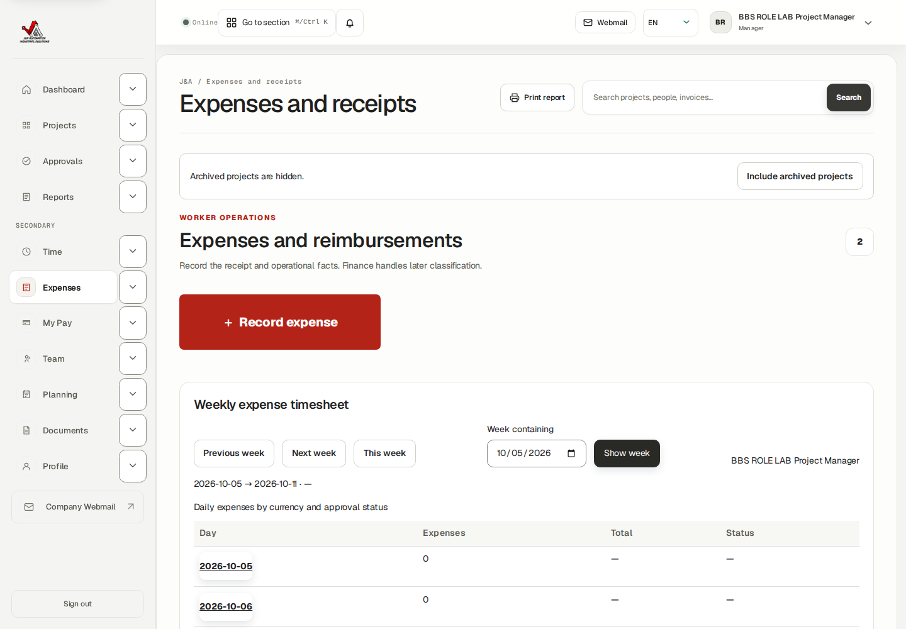
Actual PM Expenses register: scoped operational source filters and receipt review.
J&A Automation · BBS role manual · 6 October 2026
Read only your own compensation and payment status
Browser-verified isolated BBS project C-0050-P-20261005. All ROLE LAB records are synthetic training; they are not real dispatch, customer acceptance, purchase or payment.
Go here: My Pay → From / Through → Apply period
My Pay identifies your signed-in account’s own activity, compensation and reimbursement. Confirm that identity and the selected period before reading the statement.
Estimated compensation, approved compensation, finalized settlement, expected payment date and recorded actual payment mean different things. A settlement is not a bank transfer.
Do the task
Open My Pay and select From and Through; choose Apply period.
Review approved and pending estimates, Own activity detail, Settlement status and Reimbursement status for that period.
Compare the source state with your own estimate. For the PM October 8 half-hour Submitted source, the October 1–31 view showed a pending estimate; it did not prove that payment occurred.
Use Generate report for your own worker statement if needed. Statement generation was not executed in this PM packet.
If an amount or expected payment is wrong, give Finance the source/project/period and the observed difference.
Verify the result
Native My Pay opened within the signed-in PM’s own scope and selected period. A URL query naming a different person did not change that scope.
The PM packet created no settlement or actual payment.
If you get stuck
Check period first: the default view ended on the current day, excluding future October 8 training activity.
Do not assume an estimate is money owed today or money received. Ask Finance about settlement and payment evidence separately.
J&A Automation · BBS role manual · 6 October 2026
Register and retrieve a private project document
Native isolated BBS role exercise · C-0050-P-20261005 · synthetic October 2026 work only
Go here: Documents → Upload document
Sensitivity labels describe content handling. Document audience/access is a separate scope decision. The PM Upload document form exposes Project, Artifact type, Sensitivity, Description and File; it does not expose the Owner’s Document access selector.
Register only permitted operational project documents. Ask the Owner to register material needing an audience or access control unavailable in your upload form.
Do the task
Select your permitted project, Artifact type, Sensitivity (Internal, Sensitive or Customer private), Description and File. Choose Upload and register hash.
Inspect the saved filename, project, sensitivity, byte size, hash and exact scan status. Saved is not the same as scanned clean.
Open the native private document link. Compare the retrieved file with the registered content/hash and retain its source identity.
Verify the result
Native PM document 01a11186-4194-7524-a61a-dcd5a4deb734 was registered within BBS. It is a synthetic operational project note, with no claimed business event. Native private retrieval was executed.
If you get stuck
If retrieval is denied, verify project scope and document audience with the Owner. Never widen sensitivity or audience to bypass access.
J&A Automation · BBS role manual · 6 October 2026
Register and retrieve a private project document
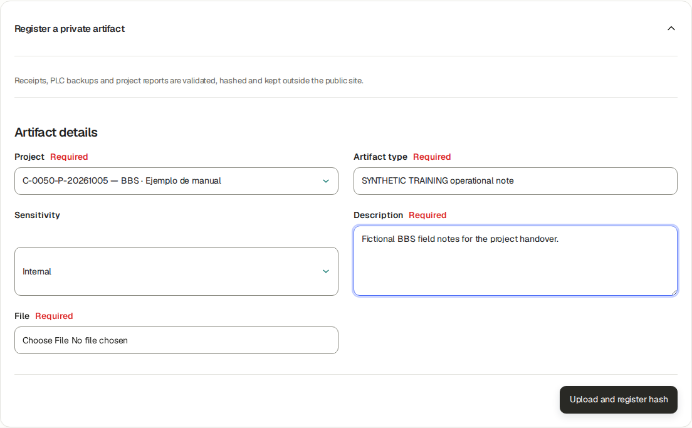
Native PM upload form with a fictional operational description. Select the file before Upload and register hash. This capture shows the input stage; it does not register a new document.
J&A Automation · BBS role manual · 6 October 2026
Register and retrieve a private project document
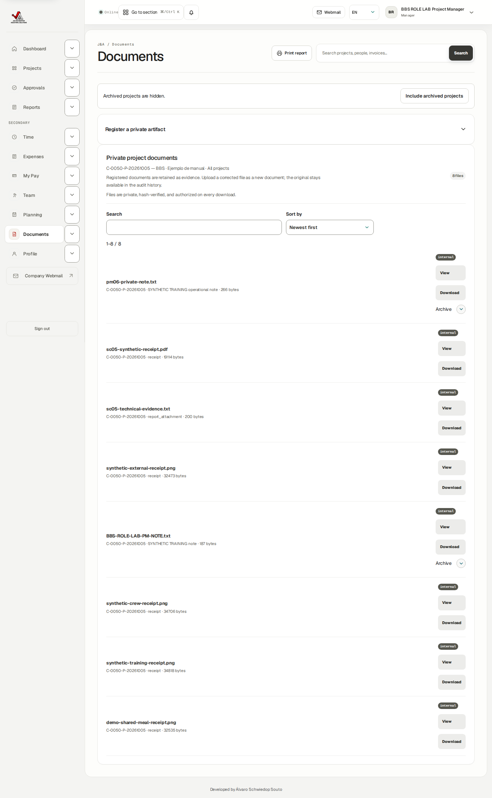
Saved synthetic private project document and permitted metadata.
J&A Automation · BBS role manual · 6 October 2026
Follow a notification to the current permitted source
Native isolated BBS role exercise · C-0050-P-20261005 · synthetic October 2026 work only
Go here: Notifications → source link
A notification is a pointer to an event. It does not approve a source, create a PDF, pay an expense or certify that the source still has the same state. Mark read only changes inbox acknowledgement.
Do the task
Open Notifications and read the project/event. Follow the report link rather than assuming the notification text is the current source.
In the native exercise Owner approval of PM own Daily 01a11185-3b39-770f-91e5-29cc4809f223 produced a Report approved notification.
Follow its link and verify the source is currently Approved. Use a permitted source action: PM generated the own saved report PDF, then refreshed to Ready and downloaded it.
Verify the result
A populated native notification and its current Approved source were verified. The exercise used Generate report; it did not treat Mark read as a business-state action.
If you get stuck
If a link is unavailable, verify current project/source scope. Do not borrow an account to follow an old notification.
J&A Automation · BBS role manual · 6 October 2026
Follow a notification to the current permitted source
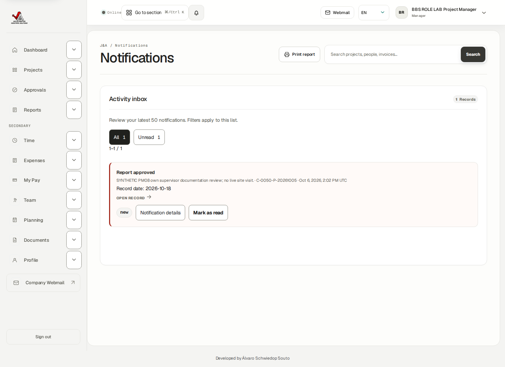
Actual populated Report approved notification.
J&A Automation · BBS role manual · 6 October 2026
Follow a notification to the current permitted source
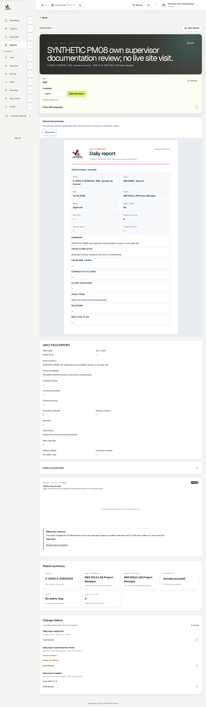
Following the notification reaches the exact currently Approved own report.
J&A Automation · BBS role manual · 6 October 2026
Complete own reports and use the shared access/security procedures
Native isolated BBS role exercise · C-0050-P-20261005 · synthetic October 2026 work only
Go here: Own Reports / Expenses / My Pay / Profile / Help
PM own work remains an authored worker source. In the native October 18 exercise PM selected their own Worker, BBS and report date, completed summary/tasks/open items/next-day plan, saved, submitted, and Owner approved the Daily v3.
For invitation and sign-in use Access · activate the invitation and sign in (access). For MFA, devices and recovery use Security · verify your own device and recovery options (security).
For own expenses use Category, Date, Amount, Currency, Who paid, Description, Payment method and private receipt; verify the saved receipt before Submit. Operational approval is distinct from reimbursement. The own-expense procedure is source-checked here, not claimed newly executed.
Use My Pay for your own statement. Check your identity, period, included sources, currency and actual payout state. No new PM payout was created in this exercise.
Do the task
For an own report choose yourself in Worker where the form requests it, complete the facts and Save draft. Submit and verify the receiving reviewer and source state.
On the approved own Daily select language, Generate report, Refresh until Ready, then Download and compare v3/source identity.
Use the shared access/security chapters for actual invitation, MFA, device and recovery procedures. Use Verification · current coverage and historical evidence (verification) to distinguish native execution from source-checked references.
Verify the result
PM own Daily was approved by Owner, generated Ready in English and downloaded natively. This exercised a separate reviewer; it does not assert that every source has a universal self-review denial.
If you get stuck
For current access or recovery problems follow the shared security recovery instructions and contact the Owner using the approved company channel.
J&A Automation · BBS role manual · 6 October 2026
Complete own reports and use the shared access/security procedures
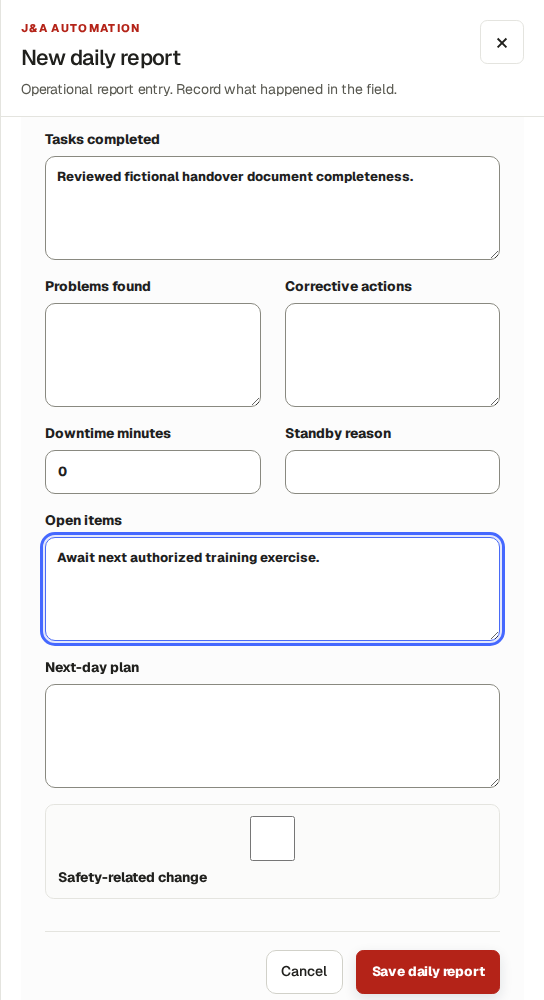
Actual own PM Daily form; own Worker selected.
J&A Automation · BBS role manual · 6 October 2026
Complete own reports and use the shared access/security procedures
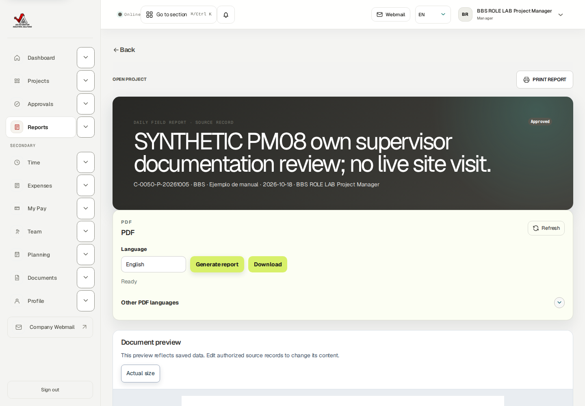
Actual Approved own Daily v3 with Ready English PDF and Download.
J&A Automation · BBS role manual · 6 October 2026
Complete the PM operational cycle and hand off
Browser-verified isolated BBS project C-0050-P-20261005. All ROLE LAB records are synthetic training; they are not real dispatch, customer acceptance, purchase or payment.
Go here: Dashboard → Planning → Approvals → Reports
A practical PM day starts with authorized scope and future plans, moves through actual-source review and correction, and ends with report and reimbursement handoffs. Finance handles the reimbursement/payment lifecycle; Owner maintains company access and policy.
Native coverage includes saved/restored membership dates, Reject and Needs changes decisions, author linked recovery and PM approval, actual Approved Technical attribution, Finance-created customer v2 followed by PM approval and Ready signature queue, private document registration and matching retrieval, populated notification to current source, own Daily approval by Owner and Ready PDF download. New Assign worker, own expense and statement generation remain source-checked references. See Verification · current coverage and historical evidence (verification).
Do the task
Confirm BBS project identity, timezone and your active membership. Check future Planning against availability.
Review submitted sources in the correct Approvals tab. Return incorrect facts with precise reasons and re-review submitted linked corrections.
Check approved Daily/Technical narratives and the exact customer period queue. Send Finance/Owner the approved source/period handoff.
Record personal work under your own source and send it to another reviewer. Check your own My Pay separately.
Retain authorized project evidence, investigate processing/access errors, and report unresolved issues with exact source references.
Verify the result
No live email, customer signature, dispatch, purchase, bank payment or production business mutation occurred in this training packet.
Existing BBS records and finalized history remained unchanged.
J&A Automation · BBS role manual · 6 October 2026
Complete the PM operational cycle and hand off · continued
If you get stuck
Do not solve a locked history problem by duplicating a project or time source. Use the supported correction or Owner handoff.
When a task belongs to another role, send a clear handoff: source, project, period, state, required result and reason.
J&A Automation · BBS role manual · 6 October 2026
Recovery · sources, obligations and immutable history
Use the role’s worked correction lesson and the current record controls. A new purchase is different from a correction to an existing purchase. A payment reversal records a cash-entry correction; it does not amend a finalized compensation entitlement or unlock its time sources.
State
Supported next action
Ordinary Draft
Use Edit/Save draft where present; attach the actual receipt/evidence before Submit. Inspect each saved draft after weekly table entry.
Submitted
Read current state and reviewer handoff. Do not create another source merely because review is pending.
Needs changes
Read the reason. Time uses Create corrected draft where available, then submit/review the linked replacement. A returned Daily/Technical report instead offers Edit and Save changes on the same report, then Submit for review; follow the exact role lesson.
Rejected
Inspect the reason and contact reviewer/Owner. The time detail does not offer the same linked-correction route as Needs changes; do not assume that route exists.
Approved, unlocked
Use the offered linked correction, preserving the original. Re-review the replacement and refresh affected unissued drafts/report versions through their supported controls.
Issued, financially locked or finalized compensation
Stop source editing. Send source ID/project/date, original/correct values, reason, affected invoice/settlement and payment references to Owner/Finance. If no authorized amendment control exists, escalate to platform support.
If you get stuck
For a finalized-compensation guard, send the exact source/date/reason and requested factual correction to Finance/Owner. Wait for a documented authorized resolution and explicit instruction about the source lock. Do not reverse a payment, change work dates or duplicate hours to evade the guard.
J&A Automation · BBS role manual · 6 October 2026
Security · verify your own device and recovery options
Go here: Profile → Account security; Profile → Add availability
Do the task
Check Account security identifies YOUR account even when an authorized workforce profile inspection shows another worker above it. Enroll only your own device. MFA is optional in this release.
For a passkey, enter Device name and choose Register passkey on the approved secure portal. Complete your device’s creation confirmation. Verify Passkey registered for this account, the registered count and named device row. Cancelled/failed registration is not enrollment.
To retire your own lost/obsolete passkey, first confirm you retain another working sign-in method. Select Revoke on the exact device and verify Passkey revoked and removal of its row. If you cannot sign in, use the verified support route rather than another person’s session.
For an authenticator, choose Enable MFA. Keep the setup URI and one-time recovery codes private in the approved password manager. Add the URI to your authenticator, enter its current six-digit Authenticator code and choose Verify MFA. Verify Enabled and Disable MFA appear; enabling without verification is not completed enrollment.
At a later MFA sign-in use Six-digit code → Verify and continue. If the authenticator is unavailable, choose Use a recovery code and enter one unused stored code. If neither method is available, contact admin@j-aautomation.com for identity-verified recovery. Do not send recovery codes or the setup URI to support.
To remove optional MFA while signed in, choose Disable MFA and verify Not enabled/Enable MFA. Confirm the intended own account before doing so. A successful settings change is separate from recovering a lost account.
Where Add availability is offered, fill Starts, Ends, Availability and Note using the displayed time basis, then Save availability. Verify the saved interval/status/note in the list; use Edit availability on that row and save the changed values. Availability is not project membership, a published shift or actual hours.
J&A Automation · BBS role manual · 6 October 2026
Security · verify your own device and recovery options
Isolated recipient’s authenticator setup was verified; the native Enabled state is shown after secret URI/recovery codes disappeared. No usable security material is published.
J&A Automation · BBS role manual · 6 October 2026
Verification · current coverage and historical evidence
English readiness edition: 6 October 2026, based on repository abc12c0961b2 with the recorded readiness fixes. The publication receipt identifies the final commit and deployment. This edition teaches the permitted ordinary cycle and supported handoffs; it does not certify every contract, device or external service.
The current evidence lives in docs/evidence/bbs-readiness-20261006. Its correction register maps all 72 suite findings to tasks, browser evidence or precise reference/support boundaries. Role manifests identify source IDs, state transitions and downloaded artifacts. Historical 5 October outputs remain historical; new screenshots do not rewrite their totals or private bytes.
Recipient activation, actual authenticator verification and own passkey registration/revocation were exercised on a separate isolated recipient. The same account controls are shared, but enrollment was not repeated for every role or physical device. Offline/expired-link and lost-device paths remain precise references where not separately executed.
Weekly submission was exercised with one ordinary draft and one eligible linked correction for Worker, Chief, External Technician and Supplier Coordinator: two selected drafts became two Submitted sources and zero remaining drafts. This does not guarantee that locked, withdrawn, out-of-scope or ineligible corrections will submit.
A final Accounting cut succeeded in a separate clean Finance portfolio; an Auditor read and downloaded its outputs. Original BBS issuer-history and source-reconciliation blockers remain documented. Email transport, real bank movement, accountant approval and genuine customer acceptance are outside the synthetic tests.
Verify the result
For a task described as reference, follow the exact named controls and prerequisites; do not infer that an illustrated outcome was executed. For support-only recovery, preserve the blocked source and obtain the documented receiving result before proceeding.